从 PC 端访问 Web 服务器，一般情况下 PC 和 PLC 在同一个局域网中，否则就需要设置路由，这里不对路由访问进行介绍。
需要在浏览器地址栏中输入 HTTP://ww.xx.yy.zz 或者 HTTPS://ww.xx.yy.zz。其中，HTTP 表示非安全访问，HTTPS 表示安全访问；ww.xx.yy.zz 表示 S7-1200 CPU 的 IP 地址。
不同的浏览器证书的下载以及证书管理器的位置有可能会有不同，本文档使用的是 IE11 浏览器。
PC 端访问 S7-1200 Web 服务器有以下几种情况，按需使用即可：
手机端访问 Web 服务器的方法，可以参考：手机端访问 Web 服务器
以下是本文档中所使用的硬件和软件：
PLC：
编程软件：
交换机：
PC 和 PLC 分别连接到交换机上，IP 地址设置如下：
1. 要使用 HTTP 访问 Web 服务器，需要保证在组态 1200Web 服务器时，取消勾选仅允许通过 HTTPS 访问，如图 1 所示。
 建议勾选仅允许通过 HTTPS 访问！
建议勾选仅允许通过 HTTPS 访问！
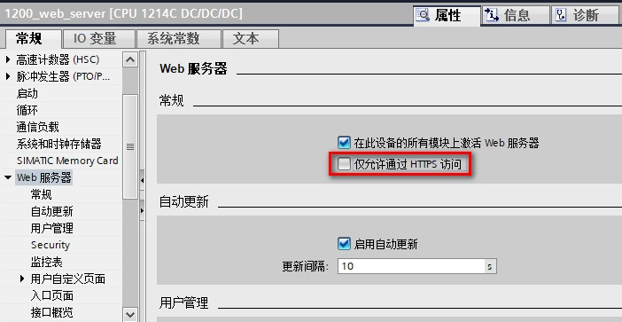
图 1.取消仅允许通过 HTTPS 访问
2. 打开 IE11 浏览器，地址栏中输入 HTTP://192.168.0.124，可以进入到 1200Web 服务器的简介页面，如图 2 所示。
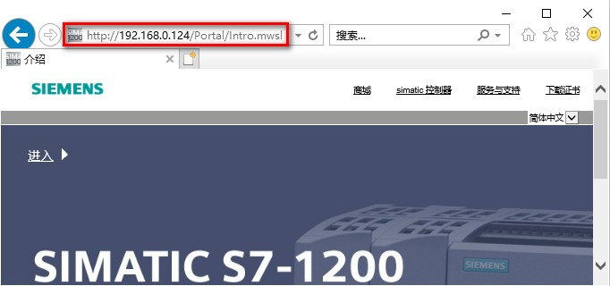
图 2.HTTP 访问简介页面
3. 图 2 中点击进入，可以进入到 1200Web 服务器的标准页面，包含起始页面和介绍页面。如图 3 所示。
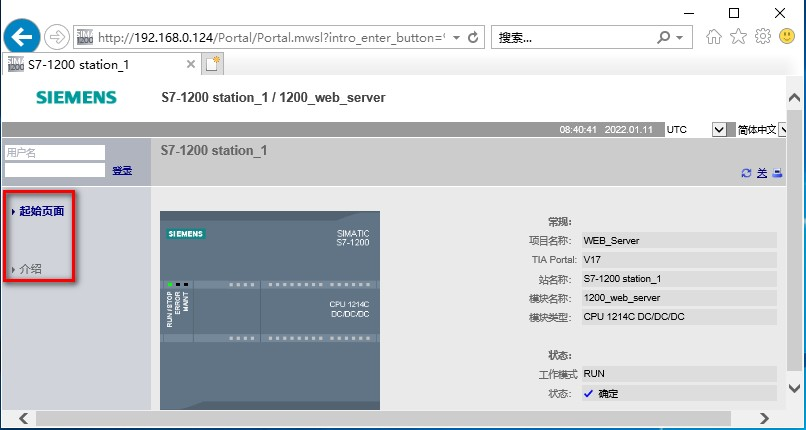
图 3.HTTP 访问标准页面
4. 如果在图 3 中，输入用户名和密码，用户登录以获取相应的访问权限，可以观察到访问自动切换至 HTTPS。如图 4 所示。

图 4.HTTP 访问用户登录
使用 HTTPS:// 连接 S7-1200 时，网站将通过数字证书对会话进行加密。Web 服务器将安全地发送数据，不会被任何人看到。
1. 打开 IE11 浏览器，在地址栏中应输入 HTTPS://192.168.0.124。弹出安全警告窗口提示此站点不安全。点击详细信息，然后，点击转至此网页（不推荐）。如图 5 所示。点击转至此网页（不推荐）的操作，相当于为浏览器将此访问作为一个安全例外。
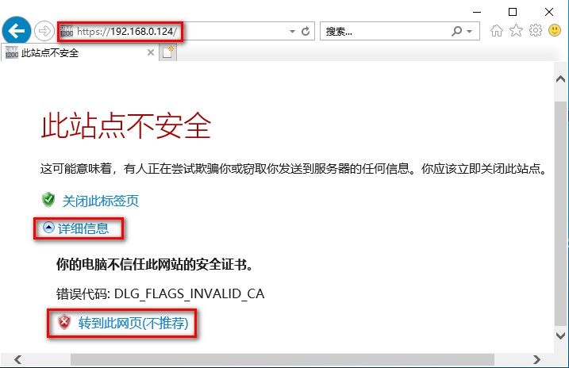
图 5.HTTPS 访问点击转至此网页
3. 点击转到此网页（不推荐）后，可访问简介页面，但是，地址栏会提示证书出错，颜色变为红色以作警告。如图 6 所示。
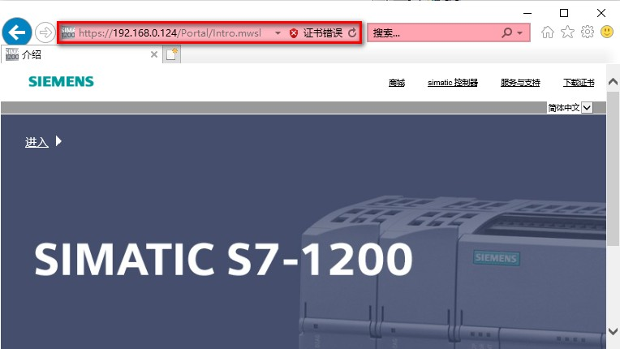
图 6.添加例外并访问简介页面
4. 图 6 中点击进入，进入标准页面后在左上角输入用户明和密码，可成功登陆，获取到该用户所拥有的访问权限。如图 7 所示。
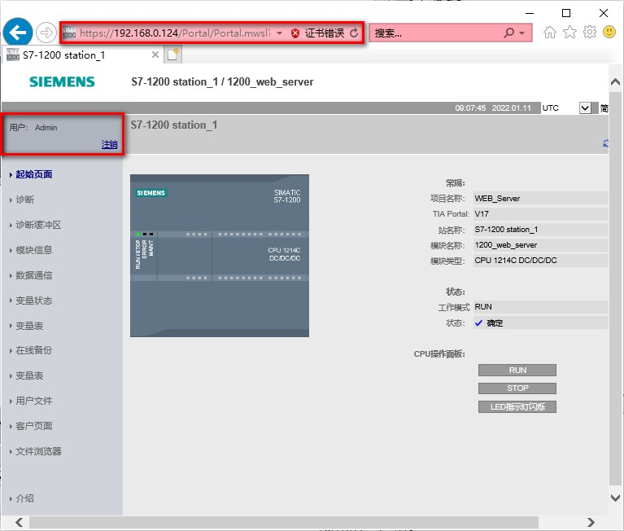
图 7.添加例外后用户登陆
 使用添加例外的方式访问 Web 服务器，有可能在关闭浏览器后再重新访问 Web 服务器时，依然出现安全警告，在地址栏显示证书错误！
使用添加例外的方式访问 Web 服务器，有可能在关闭浏览器后再重新访问 Web 服务器时，依然出现安全警告，在地址栏显示证书错误！
使用 HTTPS:// 连接 S7-1200 时，需要进行证书的验证以确定身份。为了避免添加例外的方式，重新访问时总是提示安全警告，可以在浏览器的证书管理器中安装证书。
1. 打开 IE11 浏览器，输入 HTTPS://192.168.0.124
弹出安全警告窗口提示此站点不安全。点击详细信息，然后，点击转至此网页（不推荐），参考图 5。
跳转到 Web 服务器的简介页面，在浏览器地址栏中点击证书错误然后点击查看证书，如图 8 所示。或者在简介页面右上角点击“下载证书”，然后点击打开，如图 9 所示。
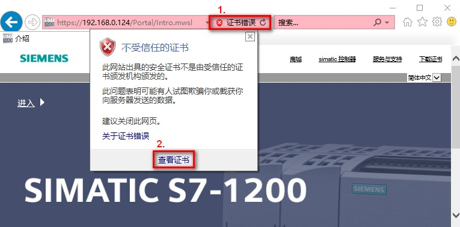
图 8.浏览器中查看证书
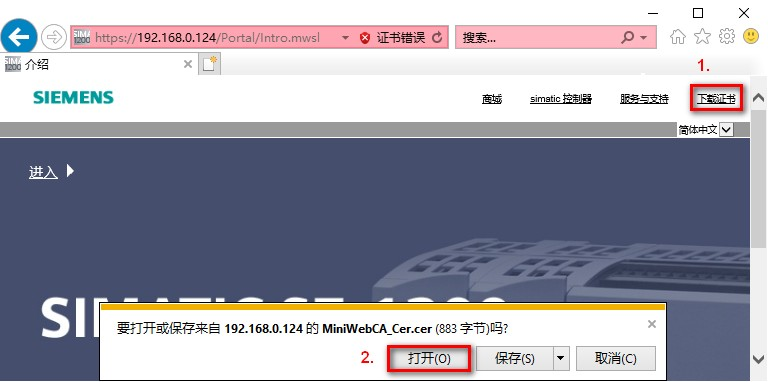
图 9.Web 服务器简介页面下载证书
2. 打开证书后，可以看到证书的参数
如果在博途中对 Web 服务器 Security 属性中选择不同类型，生成的证书信息也不同，点击图中安装证书，如图 10 - 图 12 所示。
选择：已生成的硬件，证书为如图 10 所示，证书的颁发者和使用者为 S7-1200 Controller Family，证书有效期从 2012-1-1 到 2042-1-1，不可修改，即便 CPU 做过复位或者恢复出厂设置，CPU 的模块时间也满足要求。
选择：已下载的软件，没有进行安全设置，生成自签署证书，证书如图 11 所示，证书的颁发者和使用者一致，有效期起始值和结束值可自行设置，所以需要检查 CPU 模块时间是否在有效期内。
选择：已下载的软件，进行安全设置，生成由 CA 签署的证书，证书如图 12 所示，证书有颁发机构，有使用者，有效期起始值和结束值可自行设置，所以需要检查 CPU 模块时间是否在有效期内。
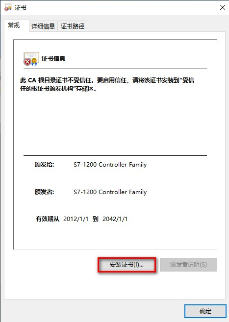
图 10. 安装证书（硬件生成的证书）
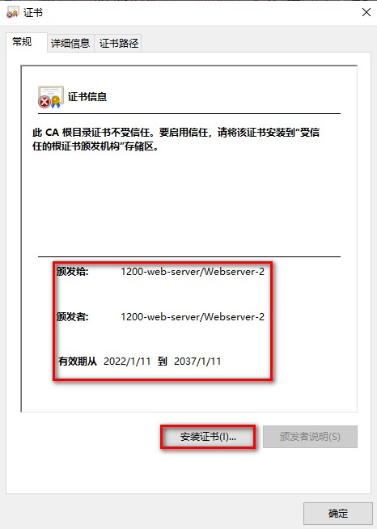
图 11. 安装证书（自签署证书）
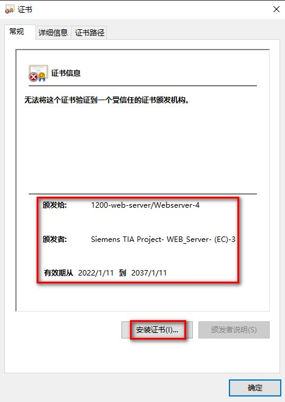
图 12. 安装证书（由 CA 签署的证书）
 注意：不同浏览器下载证书的方式不同，有的浏览器需要保存证书，然后对证书进行导入！
注意：不同浏览器下载证书的方式不同，有的浏览器需要保存证书，然后对证书进行导入！
3. 在证书导入向导中选择本地计算机，如图 13 所示。
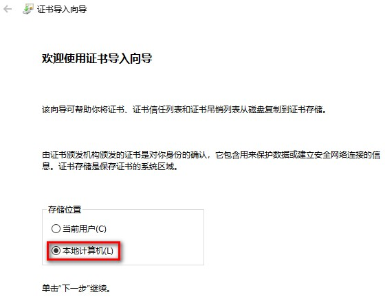
图 13.选择本地计算机
4. 在证书导入向导中选择将所有的证书都放入下列存储，然后点击浏览选择存放的路径，此处选择第三方根证书颁发机构，如图 14 所示。
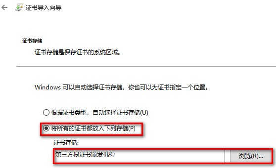
图 14.选择证书存储路径
5. 证书导入完成，单击确认退出证书导入向导，如图 15 所示。
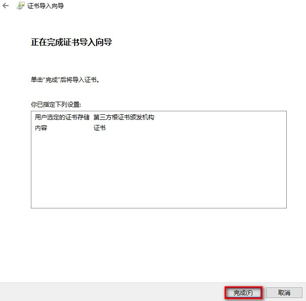
图 15.证书导入完成
6. 在浏览器中安装证书之后，再以 https://192.168.0.124 访问 Web 服务器时就不会再出现安全验证提示，可以直接跳转到 S7-1200 的 Web 服务器页面。
此时可以点击左上角的用户登录位置，输入正确的用户名称和密码。如图 16 所示。
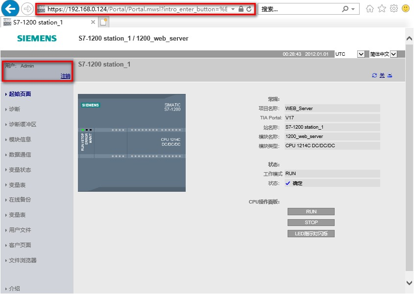
图 16.登录 Web 服务器
在情况三：在浏览器中下载 / 另存证书并导入到浏览器证书管理器中，是先添加例外，然后直接在浏览器中下载/安装证书。
在情况四中，直接从博途中导出证书，然后导入到浏览器的证书管理其中，这样再使用 HTTPS://访问时，直接可以安全的访问 Web 服务器了。
情况四，仅适用于证书类型选择已下载的软件。
1. 从博途中导出服务器证书
CPU 属性 Web 服务器，Security 中证书类型选择：已下载的软件，自签署证书时，导出证书并存放在某一路径。如图 17 - 图 18 所示。
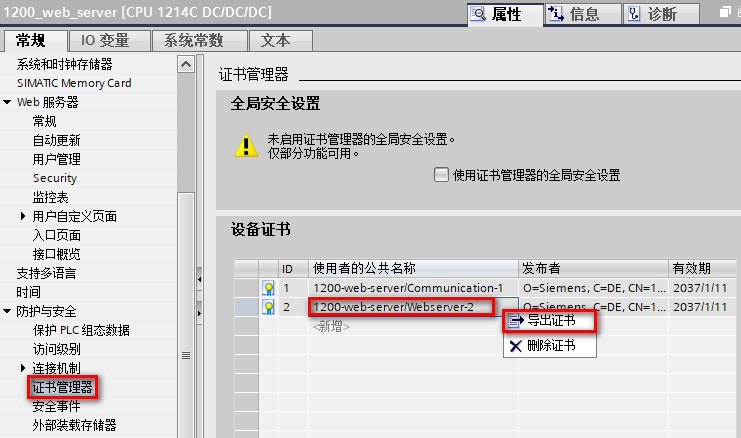
图 17.导出证书
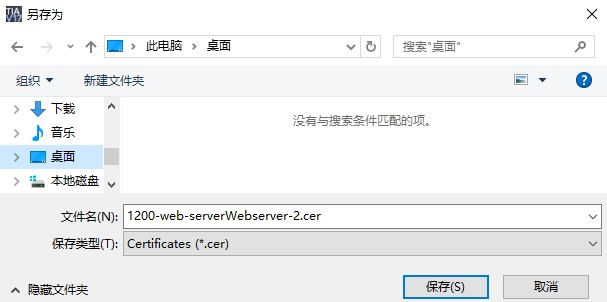
图 18.选择保存位置
2. 打开浏览器，点击设置按钮，下拉菜单中选择 Internet 选项，如图 19 所示。
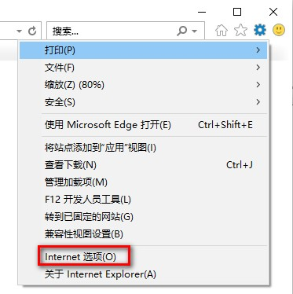
图 19.打开 Internet 选项
3. 在 Internet 选项中点击内容按钮，点击证书按钮，如图 20 所示。
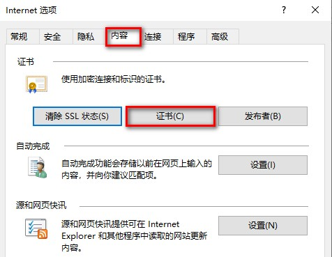
图 20.点击证书按钮
4. 在证书管理器中点击导入按钮，如图 21 所示。
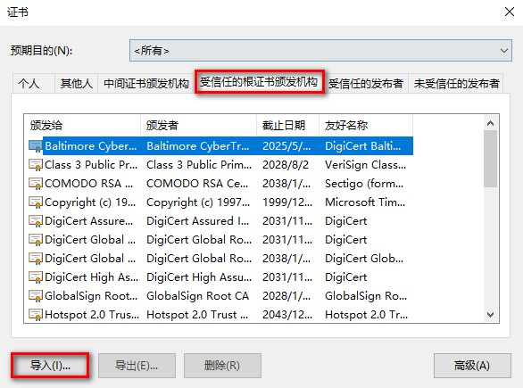
图 21.点击导入按钮
5. 在证书导入向导中点击浏览按钮，并且到存储证书的路径选中之前导出的证书。如图 22 - 图 23 所示。
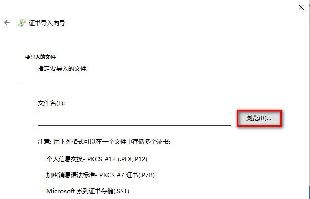
图 22.点击浏览
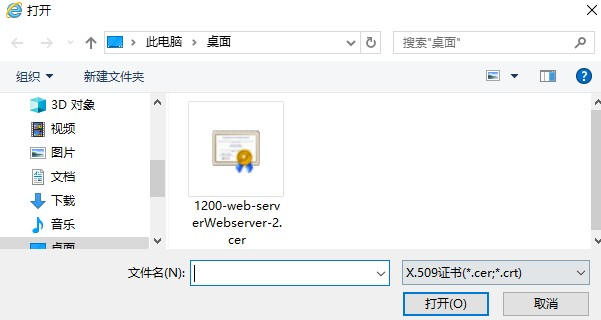
图 23.浏览并选中证书
6. 在证书导入向导中选择将所有的证书都放入下列存储，点击浏览，选择受信任的根证书颁发机构，如图 24 所示。
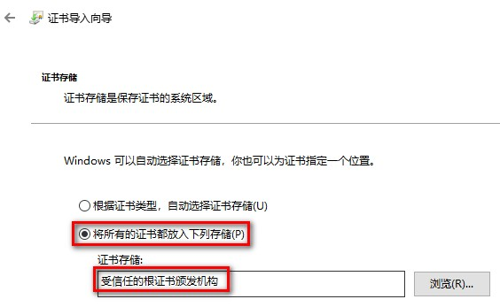
图 24.将证书导入到受信任的根证书颁发机构
此处仅列出与情况四（之一）的不同之处：
不同点一：从博途中导出证书的位置不同
1. Web 服务器组态使用的证书如果是 CA 签署的证书，从项目树，安全设置，安全特性中的证书管理器中，点击证书颁发机构，选择签发证书的 CA，右键导出。如图 25 所示。
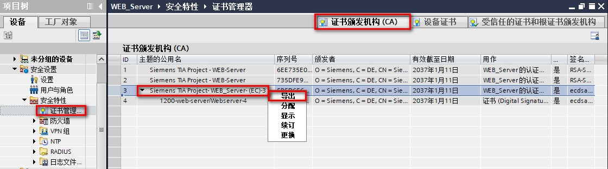
图 25.导出证书颁发机构
2. 导出的证书保存在设置的位置，如图 26 所示。
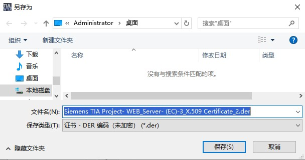
图 26.选择证书导出路径
3. 导出证书对话框中选择导出按钮，如图 27 所示。
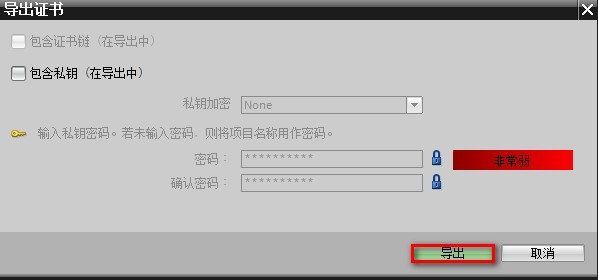
图 27.点击导出按钮确认导出
不同点二：向浏览器证书管理器中导入证书时，选择文件类型为所有类型，如图 28 所示。
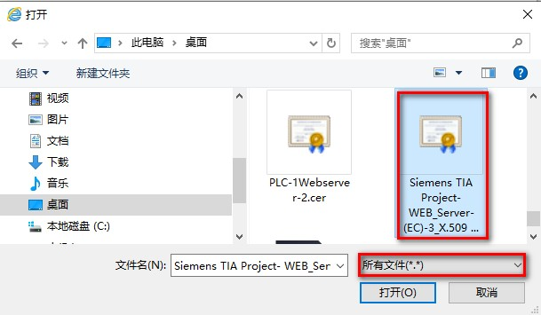
图 28.选择文件类型为所有文件